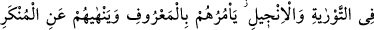

TEVRÂT VE İNCÎL’DE BAHSEDİLEN
ÜMMÎ PEYGAMBER
157. Yanlarındaki Tevrat ve İncil’de yazılı buldukları o elçiye, o ümmî
Peygamber’e uyanlar (var ya), işte o Peygamber onlara iyiliği emreder, onları
kötülükten meneder, onlara temiz şeyleri helâl, pis şeyleri haram kılar. Ağırlıklarını
ve üzerlerindeki zincirleri indirir. O Peygamber’e inanıp ona saygı gösteren, ona
yardım eden ve onunla birlikte gönderilen nûr’a (Kur’an’a) uyanlar var ya, işte
kurtuluşa erenler onlardır.
158. De ki: Ey insanlar! Gerçekten ben sizin hepinize, göklerin ve yerin sahibi
olan Allah’ın elçisiyim. Ondan başka tanrı yoktur, O diriltir ve öldürür. Öyle ise
Allah’a ve ümmî Peygamber olan resûlüne -ki o, Allah’a ve onun sözlerine inanır-
iman edin ve O’na uyun ki doğru yolu bulasınız.
“Onlar ki”, İsrâiloğulları, geçmişte ve gelecekte kendilerine göre ibâdetlerini yerine
getirdikleri “yanlarındaki Tevrat ve İncil’de” ismini ve sıfatını “yazılı buldukları o
elçiye,” yani kendisine özel bir kitap indirdiğimiz Muhammed (s.a.v.)’e, mûcize sahibi
“o ümmî Peygamber’e uyarlar.”
Beydâvî der ki: Rasûl diye isimlendirilmesi, Allah’a izafetle; nebî olarak
isimlendirilmesi ise kullara izafetledir.
Ümmî, okuyup yazmasını bilmeyen kimse demektir. Peygamberimiz (s.a.v.)’in ümmî
olması, O’nun mucizelerinden biridir. Eğer O, iyi bir şekilde okuma ve yazma bilseydi,
getirdiği Kur’an’daki mevcut ilimleri, öncekilerin ve sonrakilerin kitaplarını
inceleyerek elde ettiği töhmetine maruz kalırdı. Ama peygamberimiz (s.a.v.) hiç ilim
tahsil etmeden, okuyup yazmadan, öncekilerin ve sonrakilerin ilmini içine alan Kur’an-ı